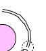

物理模型制作
第一步：
新建--->命名--->完成--->保存（选择你保存的目录）
第二步：
右键--->仿真计算模型--->二维分子模拟器
第三步：
设置二维模拟器的属性，设置一个自己认为合适的大小，我设置的是 45 - 30 。
点击工具--->在工具条上显示所有按钮

第四步：
加入 一个CK粒子，
 加入 一个PL粒子，
加入 一个PL粒子，
 一个NT粒子；
一个NT粒子；
 然后设置粒子的属性，点击粒子右键---->属性；
然后设置粒子的属性，点击粒子右键---->属性；
 点击 改变，然后将数值 改成 分别设置设置 NT 粒子属性
设置PL粒子属性
点击 改变，然后将数值 改成 分别设置设置 NT 粒子属性
设置PL粒子属性
 设置CK粒子属性
设置CK粒子属性
第五步：
模拟水车。
添加一个椭圆
点击 椭圆， 选择绑定
然后 在 中间的 NT粒子测量 距离 为0.4NM.
（测量工具使用方法是： 点击测量按钮，点击你要测量的粒子， 按住 shift键 ，然后选择距离， 去掉标识的方法是 将 距离 拉伸到 模型外。）画成一个圆由 20个 NT粒子组成，
添加20个NT粒子，组成图形
首先： 点击粒子 右键 属性
将可见 去掉，添加 径向键 （俩个粒子相连中间的键）：工具

将相邻的俩个粒子连接，中间粒子与其 上下左右 对应粒子连接。
添加角度键（俩个拥有一个相同粒子的径向键 所形成的角度。）：
点击 角度键图标，选择俩个粒子直接的 径向键按住ALT键 选择与它拥有共同粒子的另一条径向键。完成
将相邻的俩个径向键都创建角度键。
完成后
。
添加 CK粒子
创建 径向键与角度键 方法同上（先将每一个粒子 隐去，然后创建径向键，在添加角度键）。
修改每一个径向键属性，将强度改成1.
点击图形，右键 ，属性。
将 K 的 值 修改成1 。
添加一个圆，属性如下图
然后 画一条直线。选择 直线，属性，
粗细 改成 10 。然后 将 直线复制 10 份。将 直线分别 放在NT粒子上。
点击 直线，
选择绑定目标， 分别与其 相对应的 径向键 绑定，
在工具栏，选项---》视觉效果----》
完成后图像。
第六步：
添加 模型其他效果。 添加一个障碍物。
属性 如下图。
修改 他的坐标。
添加一条直线。
 属性如图； 设置 直线的 物理 反射， 点击 直线---》物理----.》反射：
如图 所示。
在添加 一个障碍物。 放在水车的 下方。
属性如图； 设置 直线的 物理 反射， 点击 直线---》物理----.》反射：
如图 所示。
在添加 一个障碍物。 放在水车的 下方。
第七步：
添加 PL粒子 ，每加入 一个PL 粒子 设置其阻尼系数0.02，加入100个左右。
第八步：
添加 水流 循环效果：
工具栏 ----》 选项-----》任务管理器----》
选择 添加任务 填入 相应内容 如图，
将以下代码填入：
define %i 0;
define %d 0;
while (%i < %number_of_atoms);
if(%atom[%i].id == 1);
set %d %atom[%i].sigma;
if(%atom[%i].ry > %height-%d);
set atom[%i].rx %width-%d;
set atom[%i].ry %d;
set atom[%i].vx -1000;
set atom[%i].vy 0;
return;
endif;
endif;
%i++;
endwhile;
确定。
第九步：
添加 重力场。
第十步：
在中间的 NT粒子上增加约束力数值为 500：可以将椭圆先解除绑定拿走，或者直接加，
点击运行 观察效果。